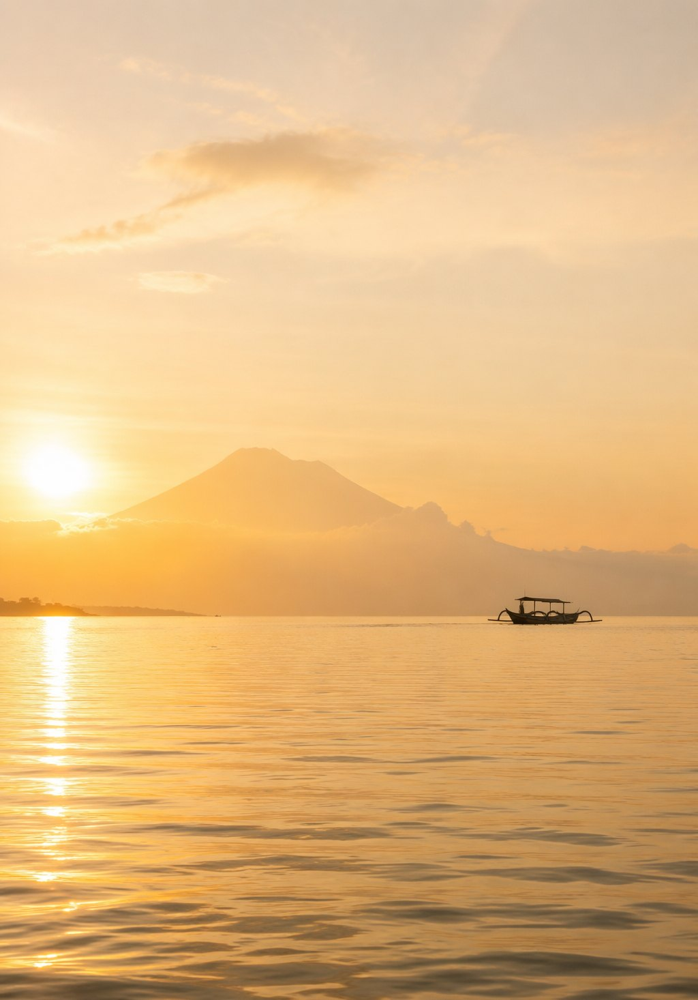
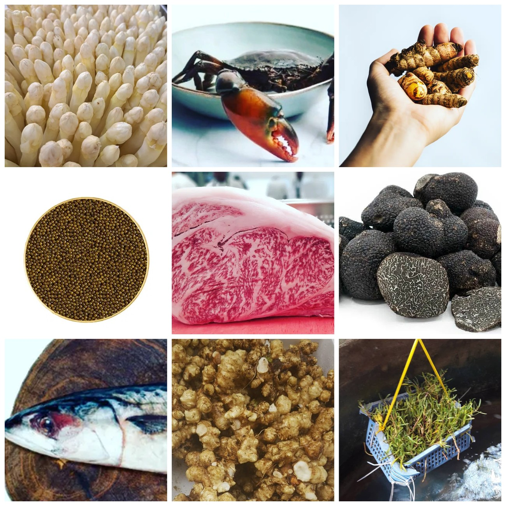
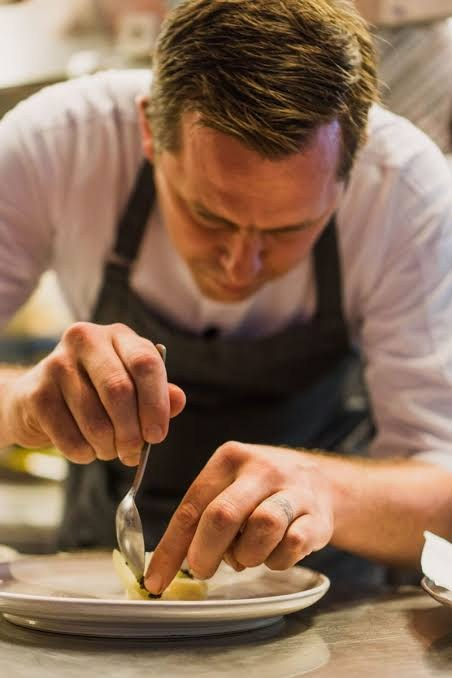
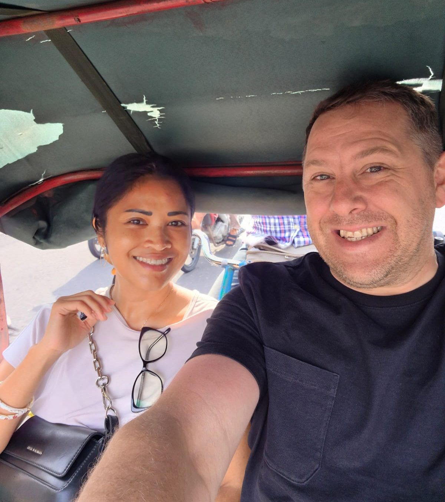

Dining · Events · Culinary Consulting · Dive & Dine
Private dinners, generous sharing tables and canapés that keep the party moving. Culinary collaborations with boutique dive resorts and liveaboards. Food created for brand launches, company celebrations and special occasions, with our role shaped around your event.
Yunic Hospitality brings together Yunic Dining, culinary consulting and Dive & Dine collaborations. Explore private dinners and celebrations with Yunic Dining →
Based in Bali. Available across Indonesia and beyond.

Yunic is led by Yuli and Nic, bringing together two different backgrounds and a shared approach to food and hospitality. Yuli brings her Indonesian roots, knowledge and instinct for hospitality; Chef Nic Vanderbeeken brings his European culinary background, technique and more than a decade of cooking and creating in Indonesia.
It starts with the people, the place and the occasion. Then, together with our team, we shape an experience that feels right, rather than simply offering what already exists.
01 — What we do

Yunic Dining
A private chef at your home, villa or yacht, in Bali and wherever you take us. European roots, Indonesian flavour and exceptional produce, shaped around the people at your table.
Seasonal set menus or a menu created around your preferences, cooked and served for up to 12 guests.
Indonesian dishes, sambals and accompaniments served together to share, for up to 12 guests.
Refined bites for pool parties, house parties and celebrations. Menu and guest numbers tailored to your event.
Canapé receptions for openings, launches, company celebrations, anniversaries and client evenings. For larger seated events, we develop the menu and guide execution with your venue and its team.

Yunic Dive & Dine
Great diving deserves great food. We create culinary experiences for boutique dive resorts, liveaboards and yachts: sharing tables, à la carte menus, set menus and romantic dinners for two after a day beneath the surface.
Through menu development, pop-ups and collaborations, we bring Yunic to your destination. We share our recipes and techniques with your chefs, so they can continue bringing a taste of Yunic to your guests long after our visit.

Yunic Culinary
For restaurants, resorts and private kitchens. Honest direction built around how your kitchen actually works: menus your team can cook every service, chefs who carry the standard forward, and ideas that hold up long after we leave.
Menu development · Culinary consulting · Kitchen support · Pop-ups · Collaborations
02 — How we work
Tell us where.
Tell us when.
Tell us who’s coming.
If we cannot do it at our best, we say no, and point you to someone who can.
Then we listen.
We talk about the food, the setting, the reason for gathering, and the things that actually matter to you.
From there, Yunic shapes the experience.
No packages pushed on you.
No unnecessary theatre.
Just something considered,
personal and made for that moment.

Our Story
Yunic grew from Yuli and Nic’s shared life in Bali and a wish to create something of their own. It brings together her Indonesian warmth, his Belgian roots and the pleasure they both find in gathering people around good food.
Yuli, founder and owner, looks after the hosting, organisation and details that make guests feel welcome. Nic leads the culinary direction. His Indonesian journey began at CasCades in 2013. He went on to become the culinary founder of Apéritif in Ubud: an idea that became reality, and a restaurant whose reputation now reaches well beyond Indonesia. Apéritif remains close to his heart, and it will keep growing stronger. Yunic gives Nic and Yuli the freedom to create something entirely their own, and that freedom is something he is grateful for every day.
With Yunic, they have room to explore together, inspired by their travels, their love of the ocean and the people they meet along the way.
Something of their world, brought into yours.
What people say
A private dinner. A Rijsttafel. A canapé party. A company evening. A menu built around one exceptional ingredient.
Choose a starting point, or simply tell us the occasion. We shape the rest around you.